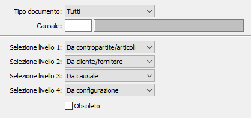

La tabella consente di configurare, per singola tipologie di documento e/o causale, come attribuire il sottoconto di costo/ricavo (ed anche centro di costo/ricavo) al rigo del documento.

Per ogni tipologia di documento gestita è possibile parametrizzare la ricerca del sottoconto per singola causale e su quattro livelli.
TIPO DOCUMENTO: indica il tipo di documento per cui effettuare l'associazione:
DDT cliente
Fatture clienti
Ordini clienti
Offerte clienti
Vendite al dettaglio
DDT fornitori
Fatture fornitori
Ordini fornitori
Autofatture
Richiesta di offerta
Richiesta di acquisto
DDT terzista
Fattura terzista
Ordine terzista
Parcelle
Tutti
CAUSALE: indica la causale del documento, del tipo indicato precedentemente, per cui si vuole specificare la parametrizzazione della ricerca del sottoconto. Sul campo sono attive funzioni di ricerca sulla tabella stessa. Se il campo viene lasciato vuoto si intende tutte le causali del tipo documento, eccetto le causali specificate singolarmente.
SELEZIONE LIVELLI: vengono utilizzati per indicare la struttura con cui ricercare il sottoconto da riportare sul rigo del documento; dall'anagrafica articoli o contropartite (in base a come configurato), dalla causale del documento, dalla configurazione oppure livello non gestito; la ricerca avviene nell'ordine visualizzato, dal livello 1 al 4:
Nessuno
Da contropartite/articoli
Da causale
Da cliente/fornitore
Da configurazione